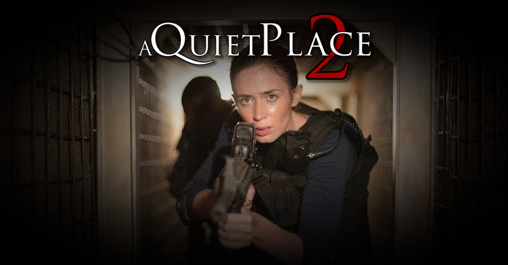

Setelah beberapa waktu lalu Paramount mengumumkan A Quiet Place 2, kini gilliran John Krasinski pemain
dan sutradara film pertama yang angkat bicara terkait ide ceritanya untuk sekuel. Kendati dirinya belum
dipastikan akan kembali menyutradarai maupun membintangi A Quiet Place 2, Krasinski mengungkapkan cerita
seperti apa yang ia inginkan di film mendatang.

Kepada Deadline, Krasinski bercerita bahwa selama masa penggarapan A Quiet Place,
ia dan tim kreatif selalu bertanya-tanya siapa lagi orang yang bertahan hidup, setelah
si ayah (karakter Krasinski) menyalakan api, dan dari kejauhan ada orang lain yang melakukan
hal serupa. Dari sinilah, di luar keluarga Abbott yang menjadi fokus A Quiet Place, Krasinski
penasaran dengan cara bertahan hidup karakter lain di situasi yang ekstrim ini, salah satunya
pria tua yang sempat muncul di film.
“Menurut saya, akan menarik untuk melihat apa yang sedang terjadi di tempat lain di saat yang
sama,”tutur Krasinski, yang membuka kemungkinan A Quiet Place 2 akan menyoroti perjuangan penyintas
baru untuk bertahan hidup.di bahas (www.ulasanpilem.com).
Situasi ekstrim yang dimaksud Krasinski sendiri merujuk pada dunia A Quiet Place yang diinvasi
alien ganas. Meskipun ia buta, alien ini memiliki pendengaran super tajam yang membuat suara sekecil
apapun bisa ia dengar. Kemampuan alien ini pun mendesak manusia di dunia A Quiet Place untuk tak
berbicara maupun membuat suara, jika mereka tak mau menjadi korban serangan brutal sang alien.
Untuk itu, seperti kata Krasinski, memang menarik untuk melihat bagaimana cara manusia selain
keluarga Abbott untuk bertahan dari teror sang alien yang bisa muncul kapanpun.
A Quiet Place sendiri tak hanya hit dari segi box office, tapi juga dari segi kritikal dengan skor
nyaris sempurna 96% di situs review aggregator Rotten Tomatoes. Sejauh ini, film sci-fi thriller
berbudget $17 juta ini telah mencetak pendapatan fantastis $258 juta. Setelah mengumumkan sekuel,
studio belum mengkonfirmasi sutradara maupun pemain untuk A Quiet Place 2
Dengan statusnya yang masih di tahap awal pengembangan, untuk saat ini A Quiet Place
2 masih belum mendapatkan tanggal rilis. "
 View My Profile
View My Profile